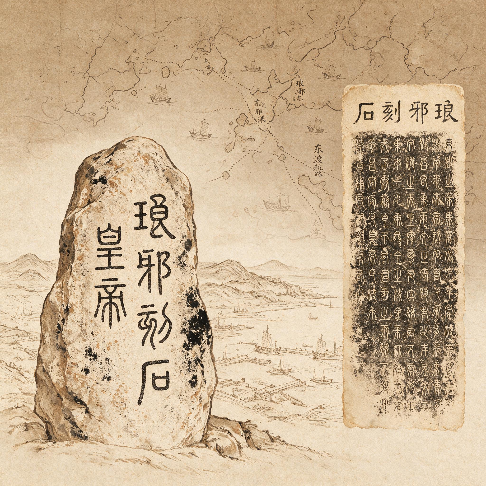

第 5 章
出发港的层累
琅琊台下的工匠先听见了海。风从东南来，穿过台基上新凿的榫眼，发出长长短短的哨音。有人抬起头，看见海面空荡荡的，像一张被风绷紧的灰布。
这是琅琊，三年前皇帝巡行至此，下令筑台。石头从越地运来，木料从会稽征调，成群的工匠在海边一凿一凿地啃这座高台。如今台已经立起来了，可工匠们没有像预想的那样散去。
新的工程压下来：造船。少府来的监工站在高处，手里攥一卷竹简，上面写着从会稽郡调运船材的数目。竹简边缘起了毛，那是日夜反复展开又卷起留下的。
石匠们坐在石料堆上，身旁凿了一半的榫眼，凿子和锤头散在地上。台下的工场里，一群琅琊本地木工正在刮削几根旧船龙骨。那是从附近渔村征来的旧船拆下来的，黑乎乎的木头上糊满牡蛎壳和盐霜。他们把能用的龙骨拼在一起，接榫，又用麻丝混着桐油灰填缝。
新材迟迟不到。一个木工用凿背敲了敲那根泡得发黑的龙骨，低着头对旁边的人说，这船底再拼下去，一入深水只怕要散。那句话很轻，混在风声和凿击声里，没有人接。他并没有说错什么。
旧渔船的龙骨，本来只走沿海浅水，从琅琊湾到成山头，再远一点也不出莱州湾。它的两侧受惯了岸边浪的拍击，没有见过深水涌。可是现在要造的，不是近海短途的渔船，而是要载百工、载童男童女、载粮草出海找仙山的船。这件事从一开始就不是琅琊一地能承担得了的。
这种等待，不是琅琊独有的。如果从高处看，从鲁东南的海岸到胶东半岛西北角，再到北边渤海湾深处的碣石，好几处海湾和港口都被同一种等待覆盖。有人等船材，有人等粮食，有人等压在路上的童男童女。
他们不知道的是，这些等待并不相通。上头的文书从一个郡发往另一个郡，数字整齐，线路笔直，好像在纸上已经把海路和陆路都接好了。可纸是纸，海是海。
琅琊这个地方，在秦帝国东方版图上，很难归成某一类。它既不是单纯的祭祀场所，也不是单纯的军事港口，更不是海边一处普通县城。司马迁后来写秦始皇东巡，三度驻跸琅琊，每次停留的时间都不短。二十八年那次，秦始皇在琅琊住了三个月。三个月，这是一个少有的数字。
皇帝在如此靠海的地方停留这么长时间，当然不只是在看海。他在这里见方士，也在这里批准求仙的计划。
徐福就是这时候上的书。司马迁称徐福为“齐人”，这一身份界定后来成为各地争议的源头。史传他自幼习得医药、星象、潮汐及炼丹诸术，在齐地民间颇有声望。他声称海中存在蓬莱、方丈、瀛洲三座神山，仙人居住其上，只要斋戒沐浴，带上一批童男童女，备好船只和百工，就能去求来仙药。秦始皇准了这件事。
这件事在《史记》里占的篇幅很小，几行字就过去了。可它给琅琊留下了别处没有的东西：这里成了徐福计划被批准的现场。后人争出发港，琅琊的底气就来自这个现场。它不需要推测，也不需要民间记忆的累积，正史在这里白纸黑字写着徐福和皇帝之间的对话。
可是批准不等于出海。一个方案在琅琊得到首肯，不等于船队会从琅琊启程。
琅琊能提供什么？它有石匠，有木工，有附近的渔夫和盐户，有几处还算避风的湾口。可它没有足够的粮仓，没有成建制的铁器作坊，更没有一个能在几个月内造出大船的船坞。
船材要从会稽来。铁钉、铁箍、斧凿一类，要从东郡和南阳调。粮食要从济北、胶东征。童男童女要从齐郡、琅琊郡、东海郡的里巷中一户一户数出来。
这每一行字写在竹简上，只是一个地名、一个数字。可落到地上，就是几十上百里的路，是牛车和驮马，是海船和码头，是沿途驿站点的灯。
秦的陆地动员本来就强在这里。它有驰道，有邮驿，有从咸阳辐射到各郡的文书体系。一道命令，十几天可以从咸阳传到岭南。
可船材从会稽到琅琊，不是驮马换站能跑完的路。它要先在会稽装船，出杭州湾，走海路北上，过长江口，再折向东，绕过今天的连云港一带，沿着海岸线北上，最后越过成山头，折入黄海西岸。这段海路在今天看不算远。可秦代的船工，必须紧贴海岸走，盯着山形、岛影和太阳的方向。夜里不能航行，遇上风向不对，只能找一处湾口下锚，等着。风不来，船不靠岸，岸上的工匠就无从下手。
这里便生出一处微妙的断裂。琅琊台下的工程因风停摆，而风本身，恰恰是秦帝国的官吏不会计算的东西。陆地上，邮驿是定时的。三十里一换马，九十里一传车。海里没有三十里一站，也不会有传车在海面上换。风不按秦律来。
它什么时候来，刮几级，能持续多久，没有一条秦令可以规定。少府的官员在竹简上写“会稽船材若干，择日发琅琊”，这个“择日”就已经把问题推给了天，推给了海。
黄县的等待与琅琊不同。黄县在琅琊东北，胶东半岛西北角的边上。这里离海更近，与其说是一座城，不如说是一串与海纠缠在一起的渔村、盐灶和船户。
黄县人看海，不像琅琊台那样属于国家工程。他们看的是潮滩的涨落，是春秋两季的鲅鱼汛，是秋后从北边刮来的风，是水道里哪一片沙洲会在退潮时露出来。这些知识不写在竹简上，只在船的甲板上、在滩涂上、在咸腥的空气里一代代传下去。黄县人有自己的船匠，有会看星斗的老船长，有把船从登州湾一带开到辽东的短途航路。他们不需要别人告诉他们海是什么。
黄县附近有徐乡。后来的地方志说这里是徐福故里。地方志这个东西，是汉代以后慢慢形成的，秦代没有。对秦代的时间线来说，黄县还没有资格和徐福扯上关系。但黄县有海港，有船匠，有会看天象的老渔民。这些不是徐福带来的，它们早已在那里。
正因为有这些，徐福的故事后来才能在这里扎根，并且慢慢长成一种不容置疑的地方传统。一个地方要接纳一个海上人物，首先得有海。
黄县的船匠们在等的，不是船材。他们本地有木料，有旧船，有熟练的匠人。他们等的是粮食。从内陆郡县征来的童男童女要吃饭，往来的船工要吃饭，押送的士兵也要吃饭。从黄县出海，如果船队要在海上漂几十天，每一艘船上都得备足口粮。黄县本地能产粮，但一个县的常年积储，经不起这样规模的抽调。
少府的调配单上写着，某郡出粮多少，经某地转某地，运抵黄县。写在纸上，这条线路不过几行字。放在现实里，粮食从济北装上牛车，一车一车往东走，路面不平，雨天泥泞，过河要摆渡。到了海边，还要等船，还要装船，还要在潮湿的滩头过夜。粮袋一旦淋了雨，或者长时间堆在盐雾里，返潮发霉只是几天的事。
黄县海岸的潮气不跟粮袋讲情面。它慢慢渗进麻布，渗进粟米，渗进士兵和孩子们的口粮。这些问题，秦代的文书里不会写。文书只写数字，不写霉变。
它们被吞没在与琅琊工地同样的等待里，没有人去比较：等船材和等粮食，哪一个更久，哪一个更致命。甚至，这两桩等不到，会不会把同一次出海的时间表撕成两半？黄县的船匠们不知道；琅琊的监工也不知道。
碣石不在同一个海面上。它在更北边，渤海北岸。风从北方来的时候，海水拍岸，礁石像一排灰白的牙齿。
后世的方志编纂者把这里与徐福连在一起，不是因为这里真有秦代的船队遗迹，而是因为碣石本身的文化位置过于显赫。秦始皇东巡到过碣石，在这里刻了石门。那是一段实实在在的帝王行迹。后来曹操率军北征，回师途中登上碣石山观海，留下那首有名的诗。那首诗写的是沧海，写的是日月星河出没其中的景象，写得极为阔大。从那以后，碣石就不仅仅是一块海边石头，而是一个文化符号。它属于江山，属于帝业，属于文人的眼中之海。
于是后人在修志的时候，便很自然地把本地已有的秦皇登临传统和徐福东渡的传说糅在一起。地方官修志，讲究山川人物、古迹遗事，总要有些可以凭吊的地方。
一条秦皇刻石已经够重，再加上徐福从这里出海的故事，分量就更足了。文人写诗，提到碣石，顺手可以带一笔徐福，说蓬莱仙踪，说巨海茫茫。这种写法不要求准确，只要求意象合适。碣石不缺意象。
但碣石的徐福叙事，基本没有秦代的物质证据。它的证据是地方志里的一条条引文，是后世碑刻上的几行铭文。这些文字层层叠叠，从燕国时的碣石，到秦代的碣石，到汉魏的碣石，到唐宋以后的碣石，每一层都留下一点痕迹。徐福的名字加进去，并不突兀，因为碣石本身已经被叠了许多层。
正因如此，碣石更能说明问题：它暴露了这类记忆的塑造过程。后人在碣石立碑，说这里是徐福东渡处时，他们不是在记录一个现场，而是在参与一场记忆争夺。这种争夺，本身是历史的后果，不是历史的起点。
琅琊、黄县、碣石，三地各有各的证据链，也各有各的局限。琅琊说最强的根据，是《史记》的明确记载：徐福在琅琊上书，秦始皇在琅琊批准。可《史记》没有写船队从哪里出海。它只说到琅琊为止。
三条线索的梳理，需要回到一个更根本的问题：徐福的船队到底要去哪里？这个终点的不确定性，也反过来影响了起点的判断。
后世一种流行的观点主张，徐福一行最终抵达的是舟山群岛、台湾岛或琉球群岛一带，而非日本本土。持此说者认为，依据《三国志·吴书·吴主传》与唐代徐坚《初学记》的记载，徐福所至的“亶洲”或“夷洲”即今台湾。而从航海技术与造船条件的角度出发，以秦代的航海能力，船队更可能止步于中国大陆近海，未必真正横渡至日本列岛深处。
然而，此说在学界遭遇了有力的反驳。人类学家林惠祥于1931年详加考辨后，明确提出“徐福所止非夷洲”，因《史记》称徐福所至为“平原广泽”，而夷洲四面皆是山溪纵横之地，地理面貌全然不符。
若船队真的止步于中国近海岛屿，那么对于出发港的讨论意义就大为不同，远航的后勤压力也相对减弱。但无论是《史记》记载徐福最终抵达一处“平原广泽”之地，见当地水土丰美而“止王不来”，还是后世《三国志》等文献提及船队后裔形成聚落、偶有返航贸易的传说，似乎都指向一个相对遥远、能够支撑长期定居的终点。这便加剧了起点港口准备工作的紧张程度。

徐福第二次也是在琅琊得到再次许可，但司马迁同样没有写出海港。黄县说的根据，在胶东半岛的航海传统和徐乡故城的考古线索。徐乡故城确实存在，遗址里出过与聚落生活有关的器物。可这些器物能不能追溯到秦代，能不能直接挂到徐福名下，考古报告往往只用“或”“疑”这样的措辞。碣石说则更不依赖实物，它靠的是后世的方志和碑刻自我累积。三地都有资格，但又没有一个能把“徐福从哪里出发”这件事锁死。
这种模糊，曾经被当成考据学的遗憾。很多年代里，人们愿意相信，历史总该有一个明确的答案，只是文献散佚了。可三地的证据并不指向同一个方向，反而各说各话。琅琊的叙事围绕政治现场展开，黄县的叙事围绕航海传统展开，碣石的叙事围绕文化符号展开。三条线索各自完整，却无法替代彼此。
从这一点看，航海的起点很可能就不在任何一个单一的港口上。秦在陆地上的统治，靠的是标准化。车轮轨距、度量衡、文书格式、徭役名簿，都被一一统一起来。可海洋不服从标准。潮汐每天两次，每次涨落的时间都有差别。
风有季节，有突如其来的转向，有近海和深水的不同脾气。从不同郡县征调的物资，无论走陆路还是走海路，到达港口的时间一定参差不齐。陆路物资可能因为雨天迟两天，海路船材可能因为逆风迟半个月。两种延迟不会自动抵消，只会相互叠加。
如果秦帝国真的只指定一个港口作为东渡的起点，它就必须把所有物资和人员都汇聚到同一个点上。这需要巨大的仓储，需要庞大的管理人员，更需要对海陆转运节奏的精准掌控。对于一个刚刚统一不久、东方沿海各郡尚未完全安稳的政权来说，把如此大的动员压力全部放在一个港口，风险反而更大。
各个港口早就存在，各地物资就近集结，反而更符合秦制一贯的分散化原则。最好的办法，是把压力分散到几个港口，让每个港口吸纳周边郡县的人和物，然后在某个近海岛屿或锚地汇合，再整体编队出海。芝罘岛、庙岛群岛都是当时可能的选择。它们近海，避风，能够短暂停泊数十艘船。
分散化动员因此不是某一个人的奇想。它是秦制面对海洋时，沿着自己的惯性往前走的结果。
陆地上的郡县分摊模式，被原样搬到海边。少府在咸阳统筹，负责制定调配方案，可它离海岸线有数百里甚至上千里。它的控制只能靠文书，不能靠到场。文书在驰道上跑得再快，也跟不上风向的变化和潮汐的周期。
当琅琊在等船材、黄县在等粮食、船材和粮食又在不同的路上各自耽搁时，少府官署里能看到的，只是几行滞后的汇报：某日某船自会稽发，某日某粮自济北发。这些汇报拼不出海上的时间真相。
上一章里，里正在户籍册上刻下一个“亡”字，征调令的文书边缘起了毛。那些逃走的、顶替的、隐没在文书最底下的孩子，不会按时到达任何一个港口。即使到了，也未必是当初点验时的那个数。每一个港口等的人，最后等到的都是一个缺口。琅琊等童男童女，黄县等粮食，而童男童女和粮食正在别的路上。它们在某些段落里也许曾经接近到达，也许从来没有。
缺口和等待叠加起来，形成了一种秦制无法处理的时间差。这种时间差在陆地上并不是没有。秦的陆地动员也常有人口逃亡、粮草迟到的记录。
但陆地动员还可以用更多的驿站、更严的惩罚、更急的文书来补救。海上的等待，没有驿站可以换马，也没有一条通用令文可以规定风的来去。船在海上，只能等。
岸上的人在等船，船上的人在等风，风不来，整条链条就停在那里。海洋是秦制没能纳入轨道的那一部分。
徐福之前，秦帝国还没有以这种方式试过跨海动员。求仙的虚妄也许只是引子，真正的困难，是跨海调动人员和物资这个动作本身。
正史在这里留下了一个空隙。司马迁给了琅琊一个政治起点的位置，却没有给任何港口一个确定的出发记录。他也许不是不知道出发港有不同说法，也许只是觉得，对于他笔下的帝国兴衰来说，船队从哪个海湾下水，远不如皇帝在琅琊听了什么话、做了什么事重要。
于是出发港被悬置在空白处。后世的每一个港口都可以把自己的记忆填进去，因为正史没有把任何一个港口钉死。
可正因为没有钉死，三个地方才有了各自的机会。琅琊有《史记》作依据，黄县有地方传统作依托，碣石有文化符号作媒介。
三者都有“对”的空间，没有一个能完全否定另外两个。这个事实本身就值得注意。
如果当年确实只有一个港口出发，那后世至少会有一个港口胜出，另外两个逐渐消失。可它们没有消失。三个地方都在争，而且各自都有说得通的道理。
这恰恰暴露了一个被忽略的事实：实际上的出发，很可能就是分散的。人们的记忆是分散的，因为当年的动员就是分散的。
分散化动员的效果，在陆地上是高效的。一个郡包干一段工程，几个县合供一批粮草，各自完成任务，再汇总到前线。这种模式在统一六国的战争中反复运行过。
可海上的关键不是各自完成，而是同时完成。粮食提前到了，会烂；船材迟到了，会停；童男童女到了，船还没有造好，人群会等，会逃，会死。海风的窗口一过，整个季风季节就关门了。
分散化动员无法提供这种“同时”。它只能提供“各自完成”。各自完成，在海上是致命的。
琅琊台下的工匠最终等到了什么？史料没说。船材有没有在风变之前运到？新船有没有造出来？这些问题没有答案。但琅琊台留下来了。
后世只记得它们出发了。出发之后的事，变成了一片空白。这片空白，正是秦制海洋动员留下的最诚实的记录——徐福第二次出海后便彻底从中国正史中消失，这一悬而未决的结局成为后世围绕其抵达何处产生诸多假说的根本原因。空白不需要填补。
琅琊台下的停工不是一天两天了。起初还有人每天到海边张望，指望能看见南边来的船帆。后来张望的人越来越少，不是因为不想看，而是因为海面上什么都没有。
一个工匠把待料的时间用来修补台基上的旧凿痕，把三年前筑台时留下的粗面细细磨平。监工看见了，没有阻止他，也没有夸奖他。
监工自己也在等——他要等的不是船材，而是从琅琊郡府转来的少府回文。他上个月已经派人送去了第一道文书，报告船材未到、工期延误。那道文书在路上走了十二天到达咸阳，在少府某曹的案上搁了三天，批复后又走了十一天回到琅琊。
回文上写的是“已饬会稽郡速办”。这六个字从咸阳回到琅琊的时候，会稽郡那边的船材到底有没有装船，没有人知道。
监工把回文卷起来，塞进 laying竹筒，继续等。他不能不等。秦律对工期有明确规定，逾期不完工，从啬夫到监工都要罚甲盾。可他也不能催——他能催谁？催风吗？
与此同时，从济北郡运往黄县的粮食正在路上经历另一种损耗。运粮的队伍从济北出发时，牛车上装的是当年秋收的新粟，麻袋扎得紧实，押送的县卒逐一清点过数目。头三天一切正常。
第四天开始下雨，雨不大，但持续了一整天。麻袋表面洇湿，赶车的人把蓑衣盖在粮袋上，自己淋着。第五天雨停，太阳出来，湿过的麻袋在太阳底下晒出一层白霜似的盐渍——那盐渍不是从天上来的，是从麻袋里渗出来的。粮食在装袋前本就含有水分，雨水加重了潮气，太阳一晒，水分往外走，带着盐分一起析出。
这不是任何人的过错。济北郡的粮仓是干燥的，装袋时的粟米手摸上去是凉的、滑的，没有发黏。
可一旦上了路，粮袋就不再属于粮仓。它属于路，属于天气，属于从济北到黄县这二百多里路上每一处洼地和每一条过水的河沟。
过了济北地界，进入胶东郡，路变得更难走。胶东多丘陵，牛车上坡时人得在后面推，下坡时又得死命拽住车辕，免得整车翻进沟里。有一辆车的车轴在过一道石坎时裂了，粮袋滚下来，有两袋摔破了口子，粟米洒在泥里。押送的县卒蹲在地上一粒一粒往麻袋里捧，捧到天色发暗，捧回去不到一半。剩下的和泥混在一起，捡不起来了。他们只好把破麻袋扎紧，继续走。到了下一个驿站，县卒在交接文书上注明“路损若干”。这四个字写在竹简上，只占一小截。它不会解释路是怎么损的，不会说出那两袋粟米里有石坎上的泥、牛蹄踏过的水、还有捧粮人手掌上的汗。所有这些都揉进了粮袋，变成一种在文书上无法量化的损失。
这种损失在陆地上是可接受的。秦的陆地动员体系里，本来就预留了路损的比例。从关中运粮到北边前线，损耗率常在三成以上，各级官吏都心知肚明。账面上的数字和实际抵达的数字，从来不会完全吻合。只要差距不太大，没有人追究。
可这套容忍损耗的逻辑，一旦搬到了海边上，就不再成立。陆路上的损耗，可以用更多的粮食来弥补，发十车到六车，下次就可以发十二车。
但海上的损耗不是量的损耗，而是时间的损耗。粮食晚到十天，船队就要在港里多等十天。这十天里，先到的人要吃饭，先到的粮食会被吃掉一部分。等粮食终于到了，原来算好的人均口粮数已经对不上了。
这还不是最致命的。更致命的是，如果不同的港口各自延误，有的等了十天，有的等了二十天，那么先出发的船和后出发的船，根本不可能在海上遇到一起。
黄县的船匠们不管这些计算。他们只管船。本地的木料用完了，旧船拆下来的龙骨也用完了，拼出来的几艘船停在滩涂上，舷板接缝处还塞着麻丝，没有干透。
一个老船匠带着徒弟反复检查每一条接缝。他知道这些船要走的不是沿岸的短途水路，是往外海去的水路。
黄县本地造的船，船底是平的，适合在浅滩上搁浅，也适合在潮间带装卸货物。平底船在近海走是优势，吃水浅，不会搁在沙洲上。可一旦进入深水涌，平底船就会在涌浪中剧烈摇晃，船底拍击水面，像一块木板被反复拍在石头上。
老船匠没有见过深水涌，但他听辽东回来的船长说过。那些船长说，出了庙岛群岛往东，水深变了颜色，从黄变成青，从青变成黑。黑色的水底下没有沙洲，只有看不见底的深。深水涌是整片海在动，不是浪花在碎。平底船在那样的涌上，龙骨会先吃不住劲。
老船匠把这话咽下去了。他没有去找监工，因为他知道监工也做不了主。造船的规格不是黄县定的，是少府定的。少府的工曹在咸阳画出了船样，标明各部分的尺寸，分发到各郡。那船样是针对内河水道设计的，还是针对近海航行的，老船匠不知道。他只知道按图造船是秦律，改动了尺寸要受罚。于是他继续往接缝里塞麻丝，用桐油灰慢慢捻实，心里想的是，这船也许根本到不了深水。也许它只需要开到芝罘岛，或者开到庙岛群岛的某处锚地，在那里和其他港口来的船汇合，把人和货换到大船上。如果真有大船的话。
大船确实应该有。会稽来的船材，如果到了，就是要造大船的。会稽郡的造船传统比胶东更久，那里的木料也更好——楠木、樟木，材质密实，能抗海水腐蚀，能撑得起更大的船体。可会稽的船材要走海路北上，这件事本身就有风险。船材不是船，船材是原木和粗加工过的板材，装在货船上，货船本身也是近海船。从会稽到琅琊，这一段海路经过长江口。长江口的沙洲在秦代比现在更靠外，水道更浅，风浪更大。货船如果在这里搁浅，船材就会泡在海水里。泡过海水的木料，晒干以后表面看不出什么，但里面已经有了盐。盐会慢慢把木纤维腐蚀掉，几年以后船板会从里面往外朽。
它所有的，只是分散在海边的一串港口、若干本地经验、不同来源的物资，以及永远错开的时间表。三块石碑，三个港口，三种记忆，最后都指向同一片海。琅琊台上的工匠听到的风，黄县海岸上船匠们等到的风，后世地方志里写下的风，都是同一种风。
只是秦代没有把风算成一种需要协调的资源。风不在郡县编制里，不在少府簿册上，也不在律令条文内。它是秦制算不出来的东西。
那些石碑立起来之后，海还是海。潮水每天两次，涨落如旧。徐福的船队曾经在某个季节从这片海岸的某一串地点出发，也许同时，也许相继，然后在某处近海锚地汇合。这些地点如今都有人认领，都有自己的理由。可一条船从琅琊下水，一条船从黄县下水，它们如果不能在某个锚地相遇，就只是两批各自出发的人。相遇需要时间，需要对风的共同掌握，需要对同一片海路的默契。
而后世只记得它们出发了。出发之后的事，变成了一片空白。这片空白，正是秦制海洋动员留下的最诚实的记录。空白不需要填补。
它摆在那里，比任何一块刻着“徐福东渡处”的石碑都更有说服力。石碑谎，碑会风化，地方志会抄来抄去，人的记忆也会随地名迁徙。但无法协调的时间差不会说谎。它已经沉入地下，沉进那些等在港口的工匠们没有完成的活计里。如今风还在吹，潮水还在涨落。秦代的船没有回来。那些石碑立着，像一场没有船票的告别。